Novo conteúdo disponível: aprenda sete formas práticas de criar prompts eficazes e melhore o uso de IA na PGE/SC. Confira aqui!
Atualizações no uso do Gemini 2.5 Pro e upload de arquivos Confira aqui!
ATENÇÃO: As ferramentas a seguir são seguras somente quando acessadas por meio de login com e-mail institucional da PGE/SC.

O Gemini é um assistente inteligente capaz de apoiar diversas tarefas do dia a dia, como análise de documentos, organização de informações, elaboração de textos e geração de ideias.
Inteligência artificial focada nos seus documentos de trabalho. Utilize-a para localizar informações essenciais em pareceres, leis e outros documentos, economizando tempo de pesquisa, e obtenha respostas precisas e contextualizadas sobre seus arquivos.
Sempre valide as informações geradas pela IA
Regra (Art. 2º, I): As informações geradas por IA devem ser precisas e baseadas em dados confiáveis.
Certo: Revisar e confrontar as informações com fontes oficiais antes de utilizá-las.
Errado: Copiar e colar as informações geradas sem conferir sua precisão jurídica.
O usuário é responsável pela validação das informações
Regra (Art. 2º, II): O usuário deve revisar os conteúdos antes de sua utilização ou divulgação.
Certo: Utilizar IA para gerar um esboço de documento e submetê-lo a revisão.
Errado: Publicar um relatório automatizado sem verificação de coerência.
Não insira informações pessoais ou sensíveis
Regra (Art. 2º, III): A inserção de dados pessoais nos sistemas de IA deve ser evitada, em conformidade com a Lei Geral de Proteção de Dados (LGPD).
Certo: Utilizar IA apenas com dados públicos ou anonimizados.
Errado: Inserir nomes, CPF ou processos sigilosos em ferramentas de IA.
Dica: Verifique se o ambiente de IA utilizado é protegido e seguro de modo que os dados não serão compartilhados na rede mundial de computadores.
Não exponha informações institucionais sensíveis
Regra (Art. 2º, IV): É vedado inserir dados estratégicos da PGE-SC em sistemas que possam armazená-los ou compartilhá-los na internet.
Certo: Usar IA apenas para estruturar textos baseados em conteúdos públicos.
Errado: Submeter um documento interno sigiloso para análise por IA.
A IA deve ser utilizada como ferramenta auxiliar, não como fonte única para decisões jurídicas.
Certo: IA pode sugerir argumentos jurídicos, mas a decisão deve ser validada pelo procurador responsável.
Errado: Basear decisões jurídicas apenas nas respostas da IA.
Registre o Uso da IA no Trabalho
Regra (Art. 3º, III): A PGE-SC deve manter registros das aplicações de IA para garantir rastreabilidade.
Certo: Manter o registro das interações e conteúdos utilizados.
Errado: Utilizar IA para gerar documentos sem qualquer controle ou registro.
Dê preferência a soluções de IA corporativas ou aprovadas pela equipe de segurança da informação da PGE/SC.
Certo: Utilizar ferramentas reconhecidas e aprovadas pelo TI.
Errado: Usar IA desconhecida ou que não tenha protocolos de segurança claros.
Não utilize IA para distorcer informações
O uso da IA deve ser ético e transparente, garantindo que os conteúdos gerados sejam confiáveis e alinhados com os princípios da Administração Pública.
Certo: Utilizar IA para melhorar a clareza do texto, sem alterar o significado jurídico da decisão.
Errado: Modificar a redação de um parecer com IA para favorecer indevidamente uma parte interessada.
Dica: O servidor deve sempre assumir a responsabilidade pelo conteúdo gerado com o auxílio da IA.
Nunca confie cegamente nos resultados da IA
O usuário deve revisar todas as respostas geradas por IA antes de utilizá-las, conforme a Portaria GAB/PGE 19/2025 (Art. 2º, inciso II).
Certo: Revisar detalhadamente o documento, corrigindo erros e garantindo que esteja alinhado à jurisprudência aplicável.
Errado: Copiar um documento gerado por IA e enviá-lo diretamente para publicação.
Dica: IA pode cometer erros e deve ser usada como ferramenta de apoio, nunca como fonte final de decisão.
A IA deve ser usada para aprimorar os serviços da PGE-SC, sem comprometer sua integridade.
Certo: Utilizar IA para melhorar a produtividade com responsabilidade.
Errado: Tentar burlar restrições para utilizar IA sem controle.
O uso da IA na PGE-SC deve seguir diretrizes claras para garantir segurança, transparência e conformidade com as normas da instituição. Seguindo estas boas práticas, é possível aproveitar os benefícios da IA sem comprometer a integridade dos dados e a qualidade dos serviços prestados.
Dicas:
✔ Proteja dados sensíveis
✔ Utilize apenas plataformas seguras
✔ Valide sempre as respostas geradas
✔ Mantenha-se atualizado sobre as regulamentações
Na prática, é através do prompt que orientamos a IA sobre o que queremos, como queremos e em que formato esperamos a resposta.
Quanto mais claro, objetivo e bem estruturado for o prompt, mais eficiente será a
resposta da IA.
Saber construir bons prompts é fundamental para usar a IA de forma estratégica e segura
no contexto da PGE-SC.
Antes de começar a escrever o prompt, pergunte-se: Qual é o resultado que eu espero obter? Seja o mais específico possível sobre o que você precisa da IA.
Exemplos:
Exemplo de escrita:
Prompt: "Elabore um parecer jurídico conciso sobre a possibilidade legal de um servidor público estadual, regido pelo Estatuto dos Servidores Públicos de Santa Catarina (Lei nº 6.745/85), acumular o cargo de professor (com carga horária de 20 horas semanais) com outro cargo técnico (especificar a área técnica, por exemplo, analista de sistemas) em uma autarquia estadual."
Pense em quais informações a IA precisa para entender completamente a sua solicitação. Inclua detalhes relevantes e específicos.
Exemplos:
Prompt: "Considere as disposições constitucionais relativas à acumulação de cargos públicos (artigo 37, inciso XVI), a legislação estadual aplicável (Lei nº 6.745/85) e a jurisprudência relevante do Tribunal de Justiça de Santa Catarina e do Supremo Tribunal Federal sobre o tema."
Utilize uma linguagem clara, direta e objetiva. Evite jargões excessivos que possam não ser compreendidos pela IA ou termos vagos que levem a interpretações equivocadas.
Exemplos:
Prompt: "Analise especificamente se a natureza do cargo técnico (analista de sistemas) se enquadra nas exceções constitucionais para a acumulação de cargos, considerando a compatibilidade de horários e a vedação ao acúmulo remunerado, salvo as exceções previstas."
Indique claramente como você gostaria que a informação fosse apresentada. Isso ajuda a IA a estruturar a resposta de forma útil para você.
Exemplos:
"Apresente o parecer em formato de texto corrido, com as seguintes seções: I - Introdução (breve resumo da consulta), II - Fundamentação Jurídica (análise da legislação e jurisprudência), III - Conclusão (resposta clara e objetiva sobre a possibilidade de acumulação)."
Forneça um breve contexto que pode ajudar a IA a entender melhor a sua necessidade e gerar uma resposta mais adequada.
Exemplos:
"O servidor em questão foi aprovado em ambos os concursos públicos e a compatibilidade de horários já foi preliminarmente verificada pela unidade de recursos humanos."
Incluir palavras-chave relevantes para o tema jurídico em questão pode direcionar a busca da IA e garantir que ela encontre informações pertinentes.
Exemplos:
"Utilize palavras-chave como 'acumulação de cargos públicos', 'servidor público estadual', 'cargo de professor', 'cargo técnico', 'Estatuto dos Servidores Públicos de Santa Catarina', 'artigo 37, inciso XVI da CF', 'jurisprudência TJSC', 'jurisprudência STF'."
Nem sempre o primeiro prompt gera o resultado perfeito. Esteja preparado para ajustar e refinar seus prompts com base nas respostas que você obtém. Experimente diferentes formulações e adicione mais detalhes se necessário.
Exemplo:
"Caso a resposta inicial não seja suficientemente detalhada, eu posso solicitar informações adicionais sobre a descrição das atividades do cargo técnico."
Este exemplo completo demonstra como aplicar os 7 passos para criar um prompt eficaz, atendendo a uma consulta jurídica específica na PGE-SC. Ao seguir essas etapas, é possível gerar prompts claros e específicos, proporcionando melhores respostas precisas e eficientes da IA.
Prompt Final:
Prompt Completo:
"Elabore um parecer jurídico conciso sobre a possibilidade legal de um servidor público
estadual, regido pelo Estatuto dos Servidores Públicos de Santa Catarina (Lei nº 6.745/85),
acumular o cargo de professor (com carga horária de 20 horas semanais) com outro cargo
técnico (analista de sistemas) em uma autarquia estadual. Considere as disposições
constitucionais relativas à acumulação de cargos públicos (artigo 37, inciso XVI), a
legislação estadual aplicável (Lei nº 6.745/85) e a jurisprudência relevante do Tribunal de
Justiça de Santa Catarina e do Supremo Tribunal Federal sobre o tema. Analise
especificamente se a natureza do cargo técnico (analista de sistemas) se enquadra nas
exceções constitucionais para a acumulação de cargos, considerando a compatibilidade de
horários e a vedação ao acúmulo remunerado, salvo as exceções previstas. Apresente o parecer
em formato de texto corrido, com as seguintes seções:
I - Introdução (breve resumo da consulta),
II - Fundamentação Jurídica (análise da legislação e jurisprudência),
III - Conclusão (resposta clara e objetiva sobre a possibilidade de acumulação).
O servidor em questão foi aprovado em ambos os concursos públicos e a compatibilidade de
horários já foi preliminarmente verificada pela unidade de recursos humanos. Utilize
palavras-chave como 'acumulação de cargos públicos', 'servidor público estadual', 'cargo de
professor', 'cargo técnico', 'Estatuto dos Servidores Públicos de Santa Catarina', 'artigo
37, inciso XVI da CF', 'jurisprudência TJSC', 'jurisprudência STF'. Caso a resposta inicial
não seja suficientemente detalhada, eu posso solicitar informações adicionais sobre a
descrição das atividades do cargo técnico."
Observações:
Este é um exemplo completo que incorpora todos os 7 passos.
A pontuação das etapas está implícita na forma como o prompt foi construído, seguindo cada um dos passos.
Em um cenário real, você pode ajustar o prompt dependendo da especificidade da informação que você já possui e do nível de detalhe que você espera da IA.
O Passo 7 já antecipa a possibilidade de interação, mostrando que a criação de prompts é um processo que pode envolver ajustes.
Dica Importante:
Prompts bem elaborados podem (e devem) ser salvos para uso futuro, especialmente em situações recorrentes. Além disso, é possível promover a colaboração entre colegas, compartilhando prompts validados e eficazes.